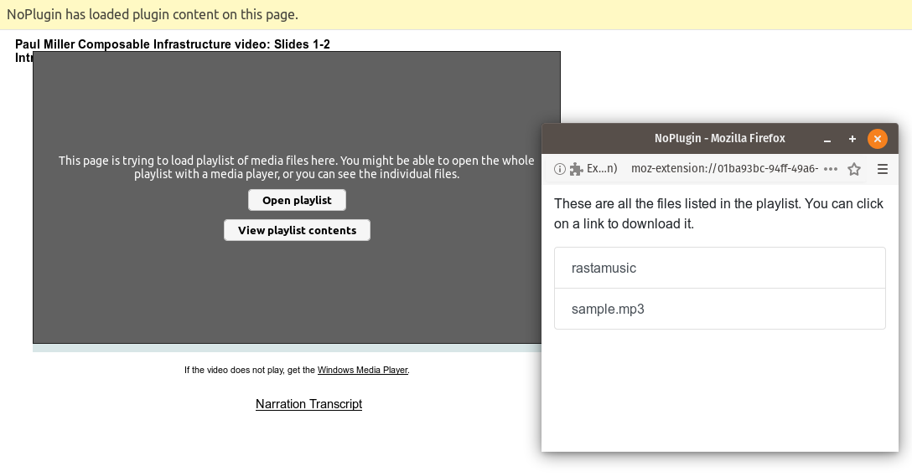

NoPlugin is a browser extension I first made a few years ago, which lets you play some legacy plugin media (QuickTime, Windows Media Player, etc.) in modern browsers. The major 5.0 update was finished earlier this year, and version 5.2 is now rolling out on Chrome, Opera, and Firefox.
The major change in this release is that NoPlugin can now read playlist files in Windows Media (.wpl, .asx), QuickTime (.qtl), RealPlayer (.ram), and M3U (.m3u) format. Why is this important, you may ask? Well, as it turns out, many web pages used to embed playlists linking to multiple media files. I only found out that was a thing when a bug report came in about a page embedding a file I had never heard of.
When a page is trying to embed a playlist file, NoPlugin will now read the file and obtain the full URL to each linked media file. If there’s just one file in the playlist (which was usually the case), NoPlugin will replace the embedded plugin like normal. If there are multiple files, you’ll get a full list with download links for each file, or you can choose to open the URL with a native media player.

You can download NoPlugin for your browser of choice using the below links, though v5.2 isn’t completely rolled out yet.